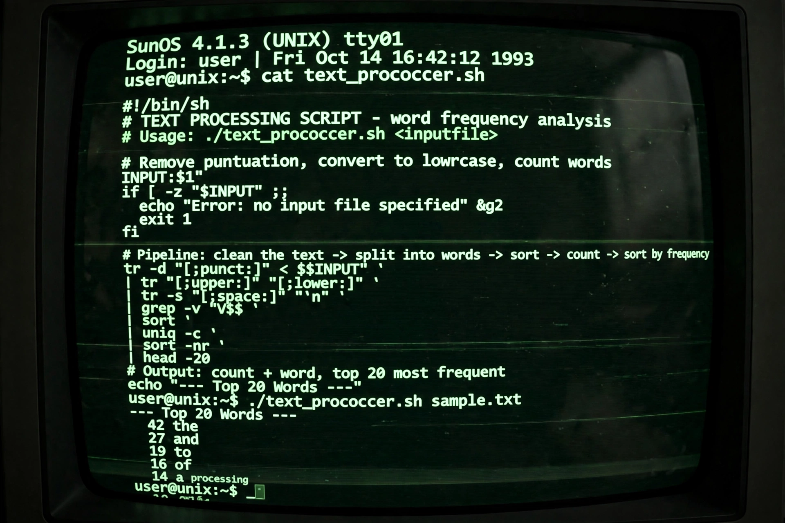

AWK

| Paradigm | Data-driven, procedural |
|---|---|
| Designed by | Alfred Aho, Peter Weinberger, Brian Kernighan |
| First appeared | 1977 |
| Typing discipline | Dynamic; strings and numbers |
| Implementations | awk (BWK awk), gawk, mawk, BusyBox awk |
| Influenced | Perl, and text-processing idioms generally |
AWK is a domain-specific programming language designed for text processing and typically used as a data extraction and reporting tool. It is a standard feature of most Unix-like operating systems. The name derives from the surnames of its creators: Alfred Aho, Peter Weinberger and Brian Kernighan, of Bell Labs, who developed it in 1977.
Structure
An AWK program consists of pattern–action pairs. The interpreter reads input line by line (records), splits each line into fields ($1, $2, …, with $0 the whole line), tests each pattern, and executes the associated action on matches. Special patterns BEGIN and END run before and after input is processed. For example, summing the first column of a file:
{ sum += $1 } END { print sum }
AWK provides strings, numbers, associative arrays, regular expressions and built-in variables such as NR (record number) and FS (field separator), making it well suited to one-liners in shell pipelines.
Versions
The language was substantially extended in "new awk" (nawk) in 1985 and documented in Aho, Kernighan and Weinberger's 1988 book The AWK Programming Language. GNU Awk (gawk) adds features such as multi-dimensional arrays and networking; mawk is a fast implementation by Mike Brennan. AWK's text-processing model strongly influenced Larry Wall's design of Perl.